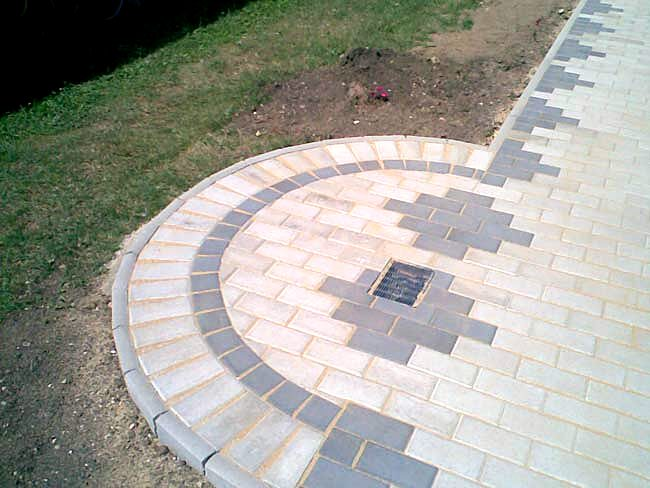
Dlažby a terasy4 fotiekNová Ves nad Žitavou
Rodinný dom na Sládkovičovej
Vybudovanie spevnených plôch (pokládka zámkovej dlažby)
Stavebná firma · Vráble · od roku 2004
Rekonštrukcie domov a bytov, zámkové dlažby, fasády so zateplením aj strechy. Pre Vráble, Nitru a okolie, od poradenstva u Vás až po hotovú prácu.

O firme
Stavebná firma LaVa začala svoju činnosť v roku 2004. Na začiatku sme robili hlavne úpravy vonkajšieho a vnútorného terénu, pokládku zámkovej dlažby, spevnené plochy, komunikácie a parkoviská. S akciovou spoločnosťou Mozaika sme sa podieľali aj na výstavbe parkovísk pre väčšie nákupné strediská a supermarkety.
Dnes robíme práce v kompletnom rozsahu: pozemné staviteľstvo a rekonštrukcie. Rodinný dom, byt alebo dvor u nás zvládne jedna firma od búrania a murovania cez zateplenie a strechu až po dlažbu a plot.

Zhotoviteľ stavby
Naše služby
Pri každej práci začíname poradenstvom priamo u Vás: odporučíme materiál aj postup a až potom sa pustíme do realizácie.
Kompletná pokládka zámkovej dlažby, od poradenstva priamo u Vás (materiály a postup prác) cez realizáciu až po dokončovacie práce. Robíme aj opravy a rekonštrukcie už položených plôch. Ak nemáte vlastný materiál, zabezpečíme dlažbu, obrubníky, palisády aj podkladový materiál od renomovaných výrobcov.
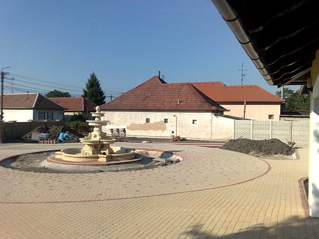
Lepenie keramickej dlažby a obkladov, opäť od poradenstva u Vás doma (materiály a postup prác) až po dokončovacie práce.
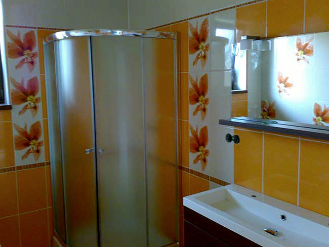
Kompletná rekonštrukcia a zatepľovanie rodinných a bytových domov aj priemyselných budov: obvodové plášte, strešné konštrukcie a súvisiace úpravy. Systém volíme podľa podkladu, potrebnej hrúbky izolácie a požiarnej bezpečnosti, najčastejšie z minerálnej vlny alebo polystyrénu.
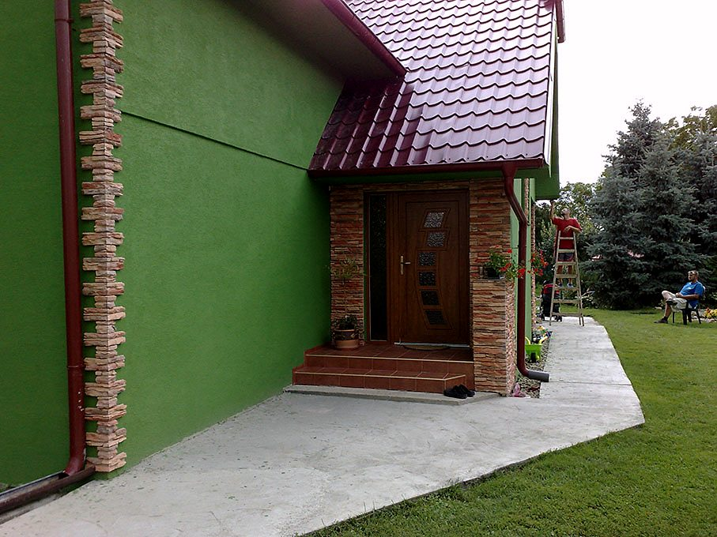
Rekonštrukcie a opravy sedlových striech, balkónových a terasových prístreškov aj altánkov.
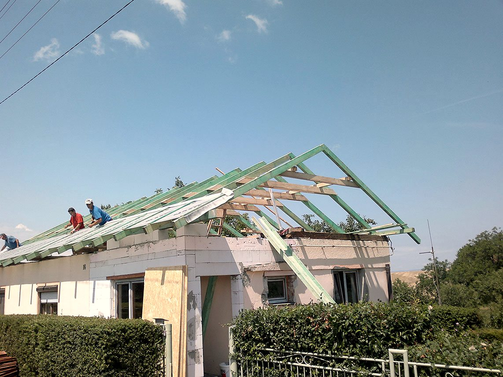
Kompletná rekonštrukcia bytového jadra a ostatných priestorov bytu, všetko od jednej firmy.
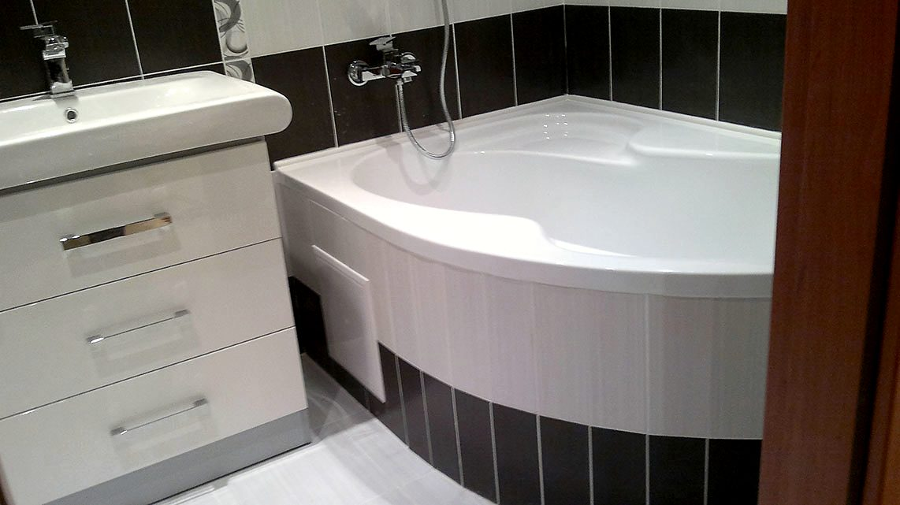
Ďalej robíme
Postup · spevnené plochy
Zámková dlažba je naša práca od prvého dňa firmy. Takto pri nás vzniká dvor, chodník alebo parkovisko, vrstva po vrstve.
Odstránime vegetáciu a pripravíme terén. Ešte predtým Vám u Vás poradíme s materiálom a postupom prác.
Dlažbu, obrubníky, palisády aj podkladový materiál zabezpečíme od renomovaných výrobcov. Ak máte vlastný materiál, použijeme ho.
Plochu zameriame a vykopeme do potrebnej hĺbky.
Navezieme a vyrovnáme podkladové vrstvy a každú poriadne zhutníme. Na podklade záleží, či dlažba o pár rokov nepoklesne.
Osadíme obrubníky do betónu: záhonové, cestné alebo palisády, rovno aj do oblúka.
Položíme dlažbu podľa zvoleného vzoru, zavibrujeme ju a zaspárujeme.
Ak treba, postavíme aj plot, aby bol pozemok hotový celý.
Referencie
17 z nich je do 15 km od Vrábľov. Kliknite na stavbu a pozrite si všetky jej fotky, alebo na mape vyberte obec.
Vráble a okolie · 146 fotiek z 20 stavieb

Dlažby a terasy4 fotiekNová Ves nad Žitavou
Vybudovanie spevnených plôch (pokládka zámkovej dlažby)
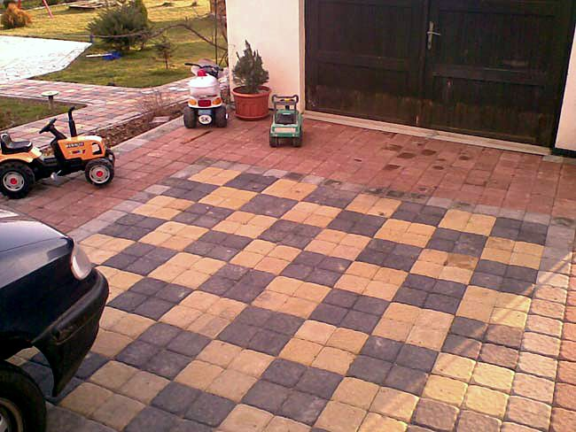
Dlažby a terasy6 fotiekGolianovo
Vybudovanie spevnených plôch (pokládka zámkovej dlažby)
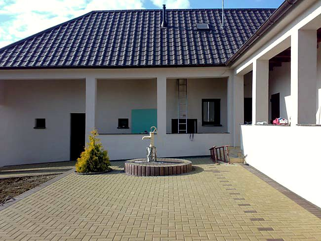
Dlažby a terasy7 fotiekChrášťany
Vybudovanie spevnených plôch (pokládka zámkovej dlažby)
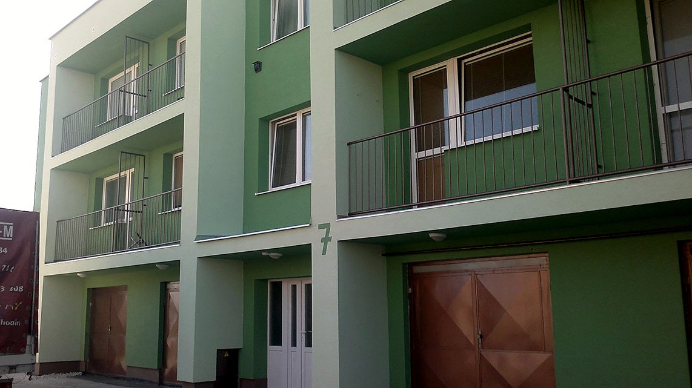
Fasády a zateplenie9 fotiekŠurianky
Zateplenie, rekonštrukcia bytovky
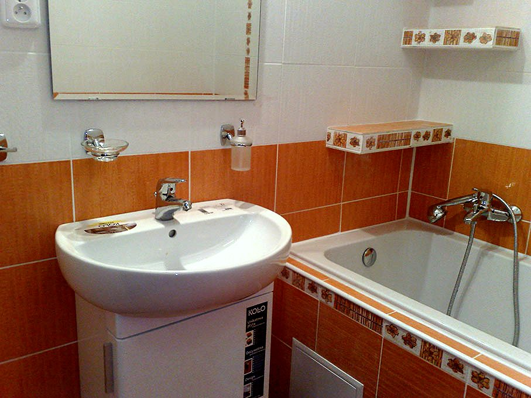
Kúpeľne a byty6 fotiekNitra – Klokočina
Renovácia hygienických priestorov, prestavba bytového jadra
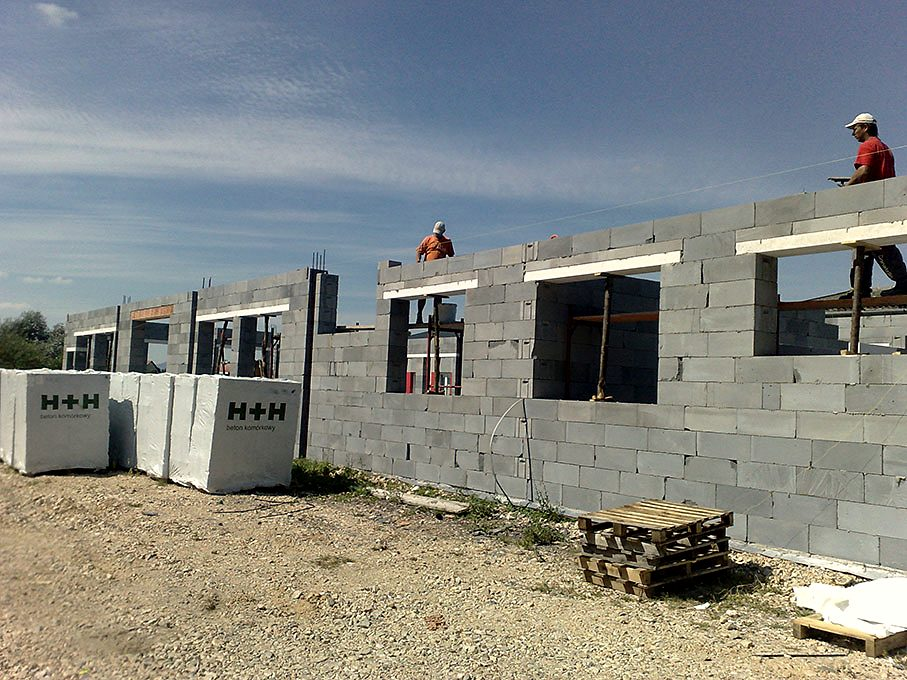
Strechy a stavby8 fotiekLúčnica nad Žitavou
Rekonštrukcia starého mlyna
Vráble, Nová Ves nad Žitavou
Vymurovanie novej fasády so zateplením
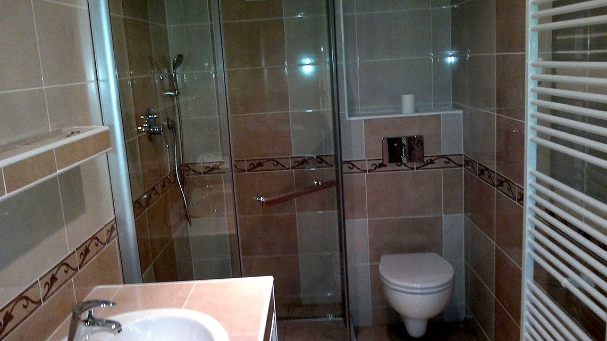
Kúpeľne a byty15 fotiekokolie Nitry
Renovovanie hygienických častí bytovky (obkladačské práce), rekonštrukcie bytových jadier
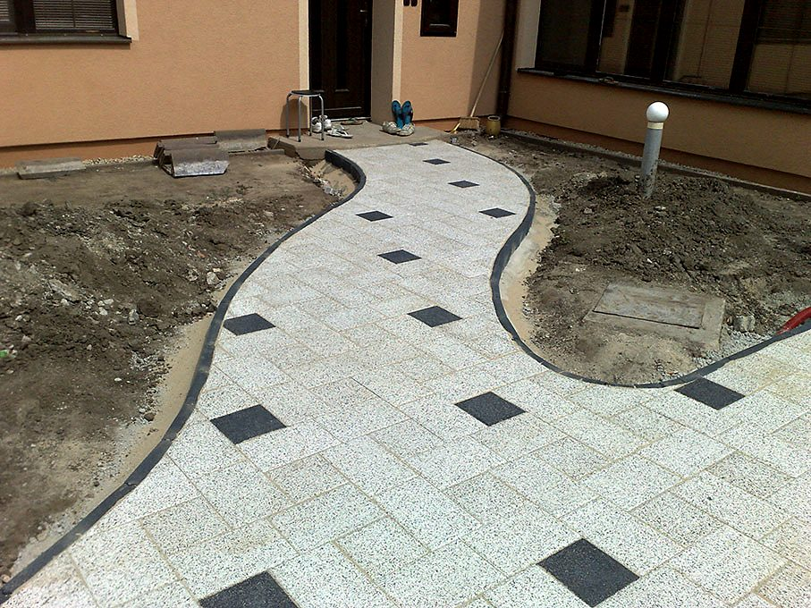
Dlažby a terasy4 fotiekVeľký Cetín
Terénne práce, pokládka dlažby chodníkov
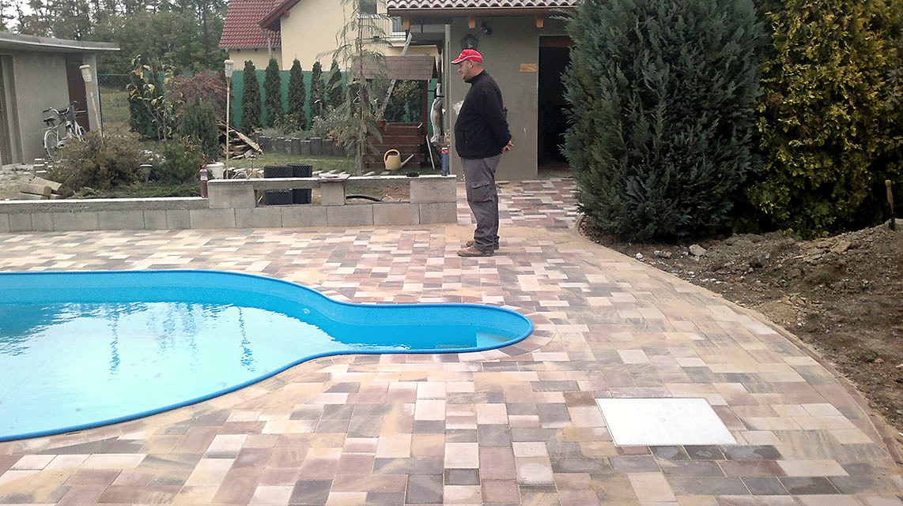
Dlažby a terasy7 fotiekLúčnica nad Žitavou
Vybudovanie prístupových ciest a terasy (pokládka zámkovej dlažby)
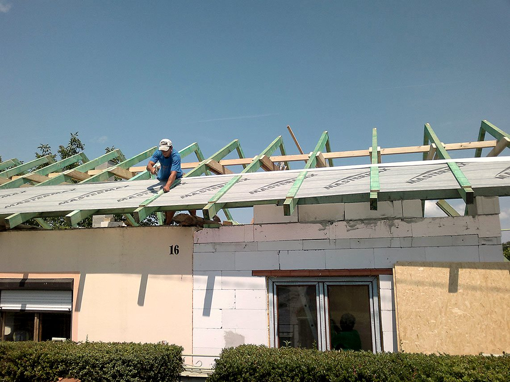
Strechy a stavby5 fotiekMelek
Rekonštrukcia sedlovej strechy (nový krov, strešná krytina)
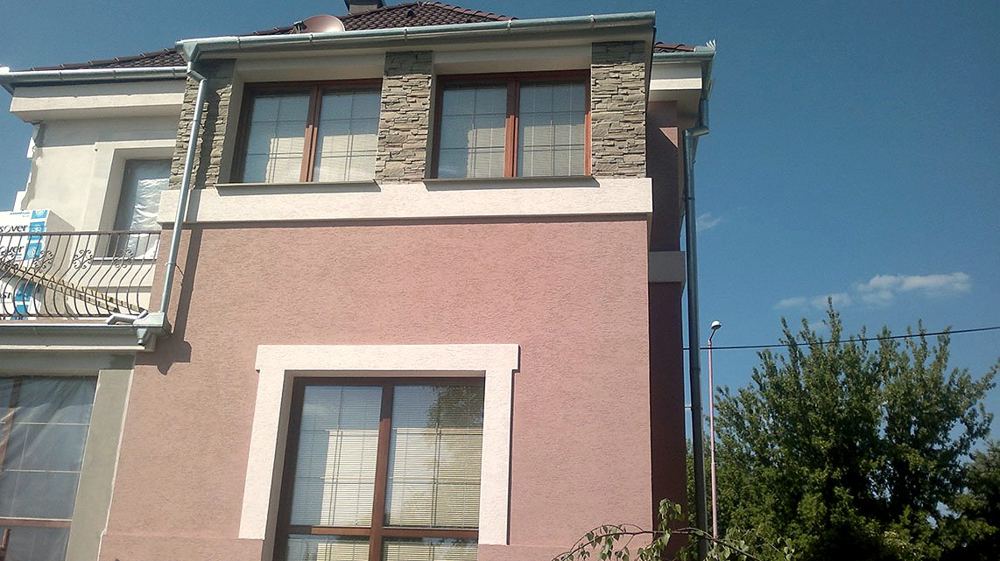
Fasády a zateplenie5 fotiekVráble, Levická
Vybudovanie novej fasády so zateplením
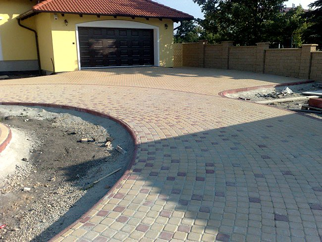
Dlažby a terasy8 fotiekVeľký Cetín
Vybudovanie spevnených plôch, úprava vonkajšieho terénu (pokládka zámkovej dlažby)
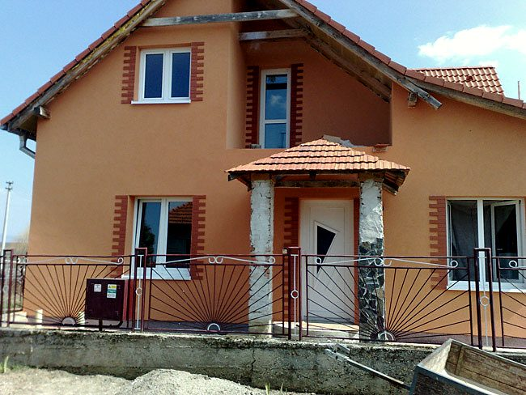
Fasády a zateplenie7 fotiekHorný Ohaj
Zatepľovacie práce na fasáde
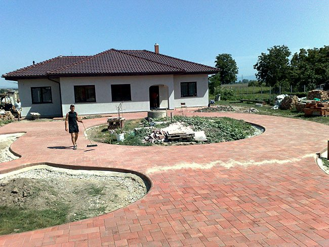
Dlažby a terasy8 fotiekLúčnica nad Žitavou
Vybudovanie spevnených plôch (pokládka zámkovej dlažby)
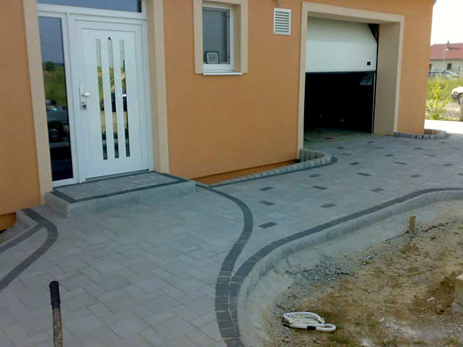
Dlažby a terasy7 fotiekVráble
Vybudovanie spevnených plôch (pokládka zámkovej dlažby)
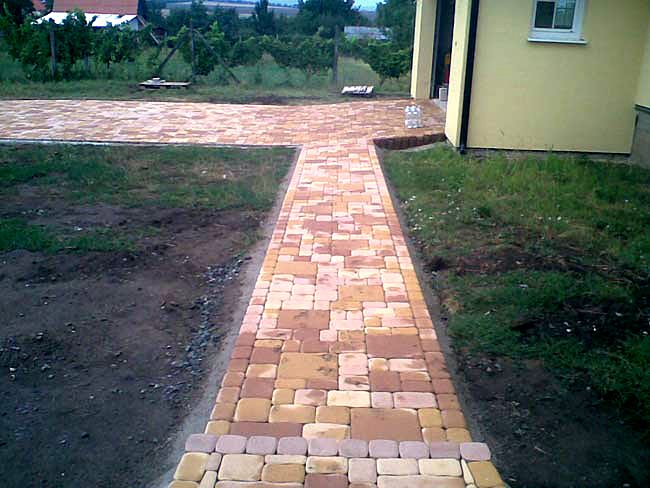
Dlažby a terasy10 fotiekHorný Pial
Vybudovanie chodníkov (pokládka zámkovej dlažby)
Vráble, Dukelská
Obkladačské práce, renovácia hygienických priestorov
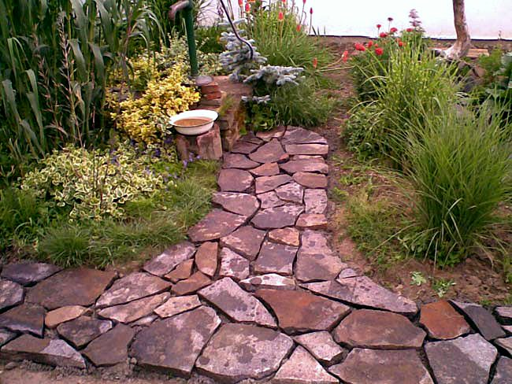
Dlažby a terasy6 fotiekNová Ves nad Žitavou
Vybudovanie spevnených plôch, úprava terénu a záhrady (pokládka zámkovej dlažby)
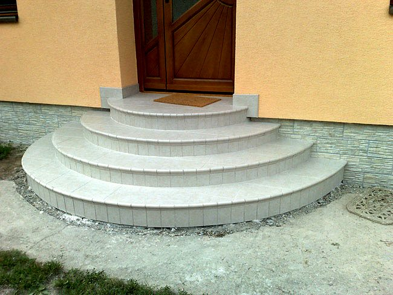
Dlažby a terasy7 fotiekVráble
Vybudovanie terasy, obkladanie prístupových častí a plotu
Cenník
Každá stavba je iná, preto cenu počítame osobitne: materiál plus práca podľa rozsahu a náročnosti. Aby ste mali prehľad o financovaní ešte pred prvým výkopom.
Cez formulár nižšie stačí stručne opísať, čo plánujete, a pridať rozmery.
Predbežnú cenu vypracujeme na základe osobnej prehliadky miesta a dohody s Vami.
Dostanete bezplatný predbežný rozpočet stavebných prác aj materiálu, e-mailom.
Cez našich dodávateľov, ktorí vedia stavebný materiál zohnať aj za výhodnejšie ceny. Do ceny materiálu započítame aj prenájom strojov a zariadení.
Materiál si môžete zabezpečiť aj sami z vlastných zdrojov. Potom platíte len za prácu.
Kontakt
Na základe Vášho popisu a výmer Vám e-mailom pošleme predbežný rozpočet prác a materiálu.
Majiteľ firmy
Ladislav Vaš
0907 360 296 stprace@lava-laco.skLúky 1118/32, Vráble (Melek)
IČO 41436326